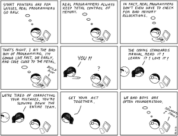

O que é um bom programador?
Nesse texto, algumas idéias sobre o que penso ser um bom programador.

Mais uma lista...
Essas exatas palavras do título, quando pesquisadas em algum buscador, nos trazem muitos artigos, quase todos estabelecendo listas muito parecidas, válidas e interessantes.
Algumas mais técnicas outras menos.
Etiquetando
O que é um bom programador?
É um problema decidir qual das etiquetas colar na nuca de um programador. Ele pode ser ótimo, péssimo, medíocre. E essa etiqueta não é útil para decidir quem contratar, antes é utilizada apenas como um adereço.
Sempre convivemos com todos esses casos, em todos os ambientes trabalhados. E um lembrete: essa classificação não tem nada a ver com experiência ou conhecimento. Isso são outras coisas.
A inspiração para essa reflexão
Lembrei-me de uma discussão muito acalorada, enquanto junto a outros dois colegas, tentávamos fazer um novo sistema funcionar, debugando e refatorando a três.
O código era muito ruim, muitas longas linhas se repetiam entre várias funções, que por sua vez tinham várias linhas, muito além do razoável.
Mais crítico, tratava-se de um sistema em Python, usando Django. Tudo para facilitar a vida, tudo pra escrever código limpo. Nada complicado.
Mas é possível complicar, e muito, o não complicável, especialmente quando se está entrando em um novo domínio de conhecimento.
Eu, administrador de sistemas, mas sempre programador, estava incluído nessa jornada, o mais velho e mais experiente. O autor do código estava iniciando em Python, o outro colega excelente programador, experiente, e com sólido conhecimento acadêmico.
E como acontece, é sempre divertido debater código, arrumar e testar na hora com outros.
A provocação
E nessa jornada, o estagiário afirma convicto, "fulano é um excelente programador" (nosso diretor).
Eu e outro colega nos entreolhamos e eu já disparei: "ele tem um ótimo conhecimento, ótima formação, mas é um péssimo programador", no que o outro mais experiente concordou.
O estagiário rebateu com destemor: "ele é bom, resolve os problemas".
Nisso o outro colega lembra o stag que resolver um problema de qualquer jeito, é fazer gambiarra. E isso não é coisa de bom programador.
O debate continuou por um tempo, até que "o assunto chegou junto" e fez uns estragos em nosso esforço.
Não era uma questão de falar mal do chefe, mas estávamos diante de um neófito empolgado com um péssimo exemplo.
A conclusão
E, muitos anos passados, isso voltou à minha mente após ler um texto excelente, muito bem escrito, de Cecily Carver, Things I Wish Someone Had Told Me When I Was Learning How to Code.
O texto não trata de definir o que é um bom programador, mas ajuda a evitar o lado negro da força.
É uma postura, são princípios.
Para mim, um bom programador é aquele que resolve problemas sem criar outros, sem plantar minas terrestres. Um bom programador é capaz de trabalhar solitário e em grupo. Um bom programador é crítico e sensato o suficiente para saber quando e como dizer não. Um bom programador é um eterno aprendiz.
Muitas vezes, pela pressão dos prazos, das necessidades de sustento, da opressão mesmo da estrutura de comando, abaixamos a cabeça e dizemos sim, ou o nosso não é ignorado. E isso estraga tudo. Torna a criativa e empolgante atividade da programação em algo muito pesaroso.
De meus tempos de militância política, palavras de Carlos Marighella entraram em meu ser e tento me guiar por elas. É um trecho de um poema seu:
É preciso não ter medo,
é preciso ter a coragem de dizer.
Ter a coragem de dizer é diferente de ser uma pessoa descontrolada e vulgar. É uma questão de princípios, de caráter.
Portanto, um bom programador, para muito além da inteligência técnica, possui uma excelente inteligência emocional, que se reflete em um código bom, limpo, eficiente, de fácil entendimento e manutenção, e que resolve o problema a que se propõe.
E é honesto. Honesto ao escolher nomes de funções e variáveis, honesto ao perceber que dado código deve ser refatorado, honesto com os futuros programadores que lerão seu código. Honesto ao não se calar sobre os rumos que um dado projeto toma.
Um bom programador é honesto consigo mesmo.